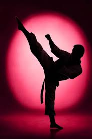
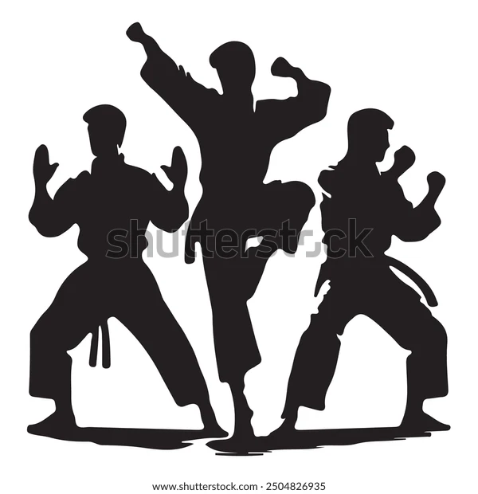
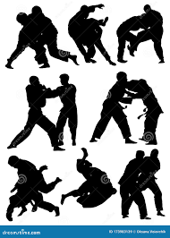

LA ACADEMIA ANYINSAN MANEJA ARTES MARCIALES MIXTAS
El deporte ayuda a mejorar la condición física general, la salud mental y fomentar las relaciones sociales. Es un arte espiritual que lleva a estar en armonía con el espíritu y el universo.

Más allá de las técnicas físicas, el karate enfatiza valores como la disciplina, el respeto, el autocontrol, la perseverancia y la búsqueda de la perfección del carácter.
Más allá de un deporte, es una filosofía que se centra en el autocontrol. Se basa en técnicas de patadas y golpes de mano, practicando también la agilidad. Es un deporte basado en el respeto y la disciplina.
Es un deporte basado en agarres e inmovilizaciones, generalmente utilizando la fuerza del oponente en su propia contra. Se utiliza para competir sin la intención de dañar al contrincante.

Arte marcial y deporte olímpico japonés que enseña a usar la fuerza y el equilibrio para derribar, inmovilizar o someter a un oponente sin usar armas, a través de técnicas de proyección, agarre y control en el suelo.
Arte marcial tradicional de china que combina defensa personal, disciplina física y mental, con movimientos fluidos y ágiles. Enseña técnicas de golpeo, patadas, bloqueos y desplazamientos, así como el desarrollo del equilibrio, la coordinación y la concentración.